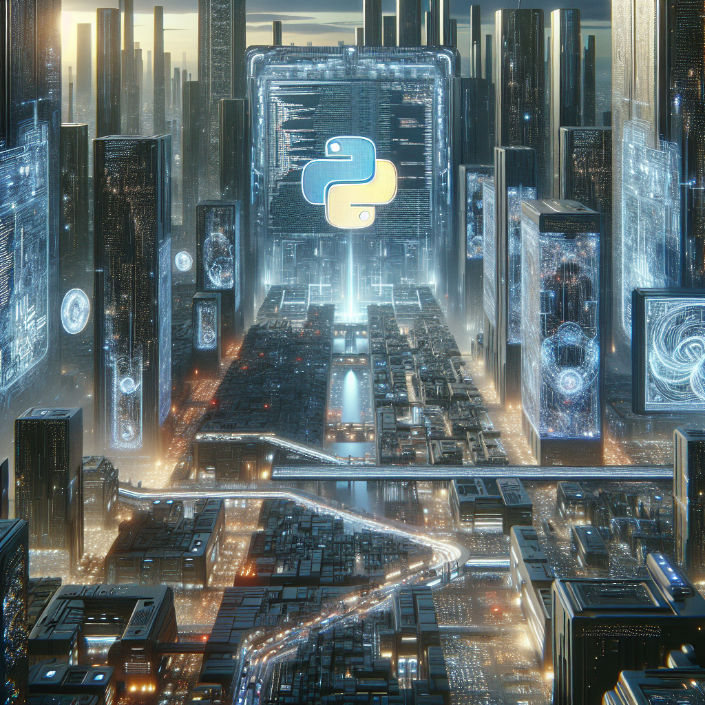

Python and the Future of AI
In the rapidly evolving field of artificial intelligence, Python has emerged as a key player, offering a versatile and powerful platform for AI development. As a Python student, I have delved into its extensive libraries and frameworks tailored for machine learning applications, making it an ideal choice for those interested in AI. With its user-friendly syntax and vast community support, Python streamlines the process of developing AI solutions, enabling both beginners and seasoned professionals to leverage its capabilities effectively.
Python's role in shaping the future of AI is undeniable, as it continues to drive innovation in areas such as natural language processing, computer vision, and predictive analytics. Its flexibility and scalability make it a preferred language for implementing AI algorithms and models, paving the way for groundbreaking advancements in the field. By mastering Python, individuals can position themselves at the forefront of AI development, contributing to the transformative impact that technology will have on various industries in the coming years.